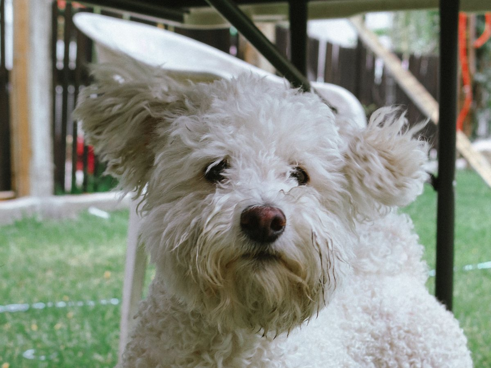
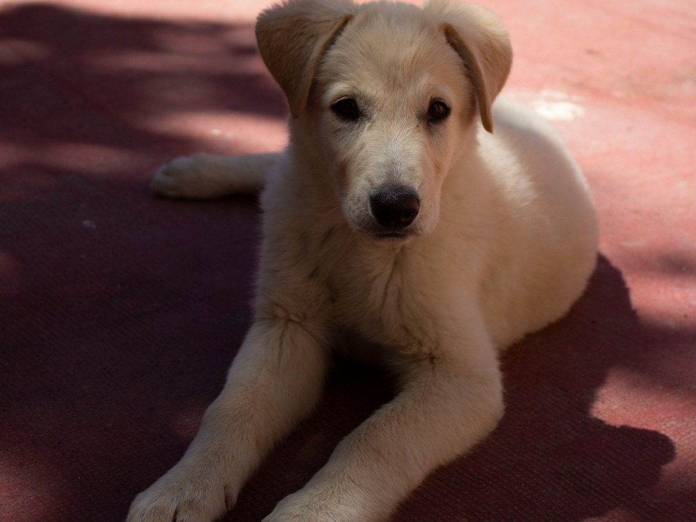
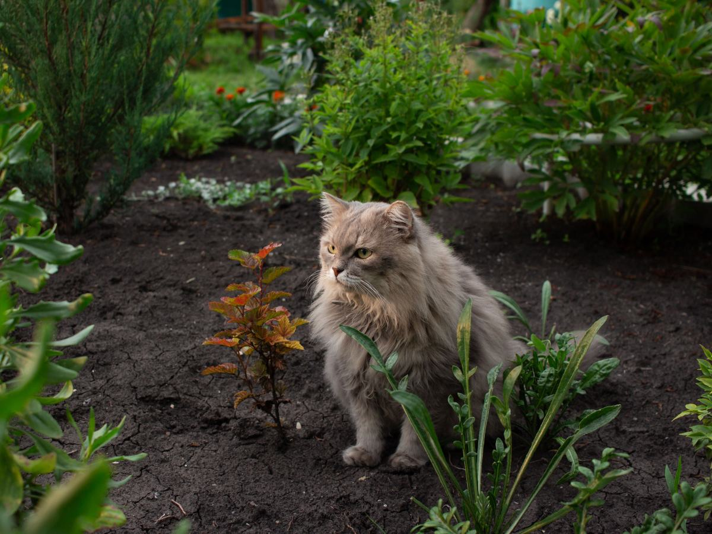
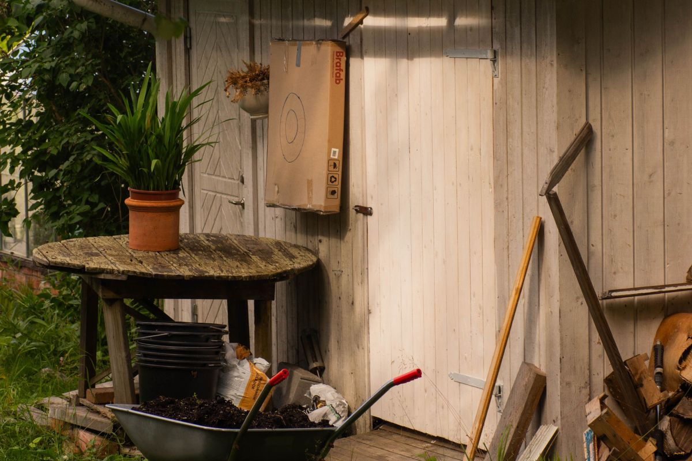
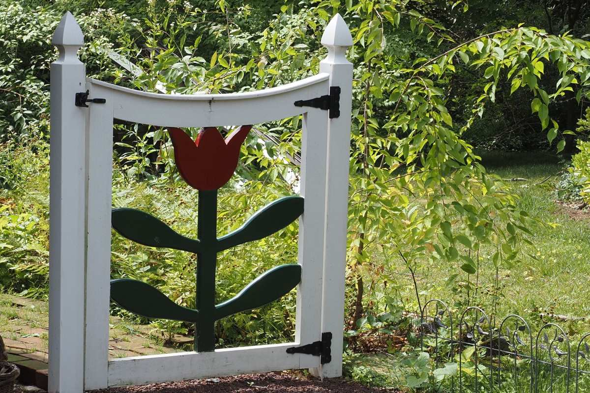
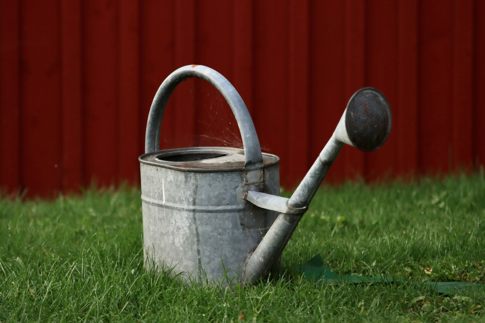
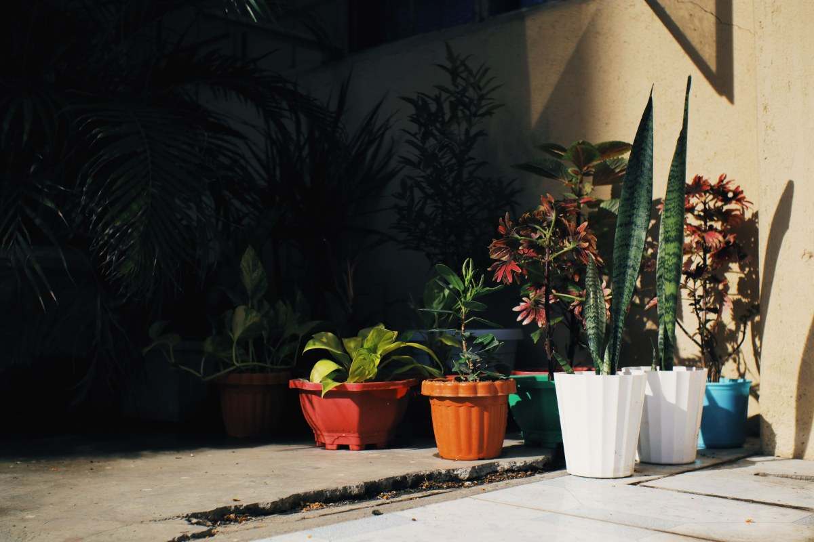
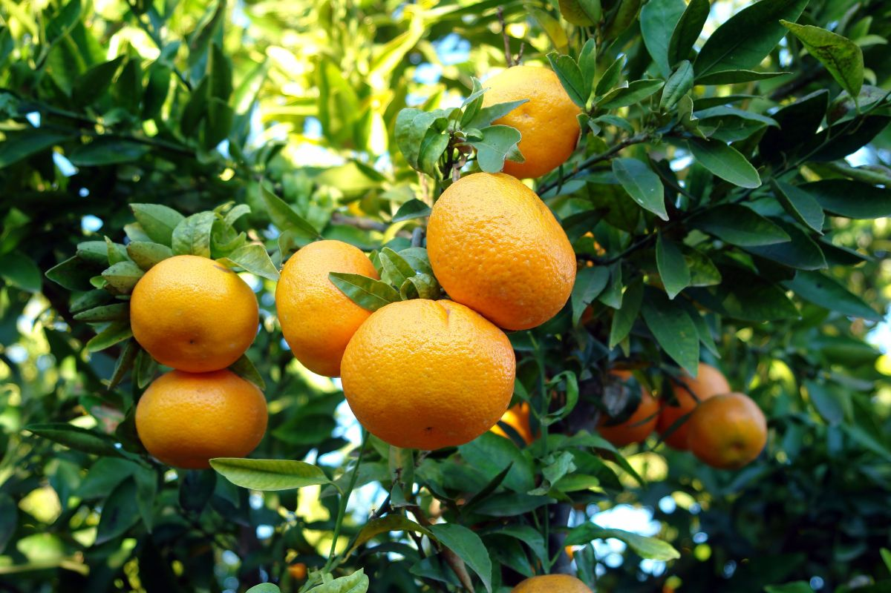

Puente Alto · veterinaria
¿Qué del patio le hace mal?
4,6 con 126 reseñas. Una guía de casa, zona por zona, y una regla.
- 4,6de promedio en Google
- 126reseñas
- 20:30cierra de lunes a viernes
- 0páginas: su ficha dice «agregar sitio web»
La pregunta que se hace tarde
Lo que hay en el patio
Cinco zonas para mirar antes de que el perro mastique algo.
- El jardínPlantas que no se muerdenLirios, adelfa, azalea y cica, entre otras. La lista completa, en la consulta.
- La bodegaBajo llaveVenenos de jardín y fertilizantes, arriba y cerrados.
- El aguaNada estancadoBaldes y charcos se vacían; su agua, limpia.
- El veranoSombra todo el díaY paseos temprano o tarde.
- El frenteLa reja y la calleReja cerrada y paseo con correa.
El patio es suyo. Mirarlo es tuyo.
En Av. Gabriela Poniente 611
Qué atiende
-
01
Diagnóstico
Lo nombran nueve reseñas.
-
02
Ojos
Los nombran cinco reseñas.
-

03
Perros
«Perrita» sale en catorce reseñas.
-

04
Consulta
De ejemplo.
-
05
Vacunas
De ejemplo.
-

06
Gatos
De ejemplo.
Tres salen de los temas de sus reseñas en Google; el resto lo confirma la clínica.
En Waze figura como «Veterinaria Los Naranjos MV U Chile». Ese dato, que da confianza, no está escrito en ninguna página propia.
Waze, visto el 18-09-2026
Del rubro
Patios con dueño





Fotos de referencia: ninguna es de la clínica.
Dónde está
En Av. Gabriela
- Dirección
- Av. Gabriela Poniente 611, Puente Alto
- +56 9 9138 1656
- Horario
- Lunes a viernes 12:00–20:30; sábado 14:00–17:30; domingo cerrado, según Google
veterinarialosnaranjos.cl está libre en NIC Chile.
Gabriela Poniente 611 Abrir en Google Maps
Para Los Naranjos
Qué es real y qué falta
Lo verificado
El 4,6 con 126 reseñas, la dirección, el horario, el celular y que la ficha ofrece «agregar sitio web», vistos el 18-09-2026.
Lo de ejemplo
La guía del patio, tres de los seis servicios y las fotos. Sin tratamientos caseros, medicamentos ni precios.
Lo que falta
Tu lista de plantas, el equipo, los años de la clínica (no pudimos verificarlos) y registrar veterinarialosnaranjos.cl: losnaranjos.cl ya tiene otro dueño.